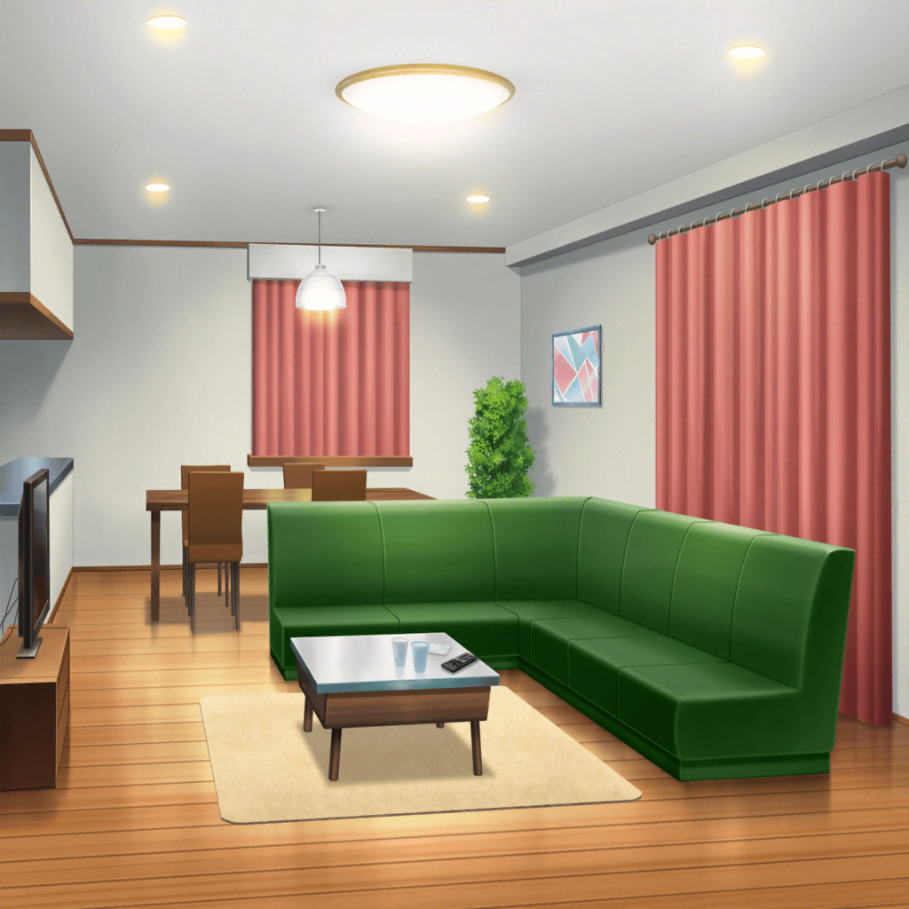

花園家 リビング
香澄
かわいい〜！ ホントにうさぎがたくさんいる〜！
たえ
紹介するね。
しろっぴー、パープルちゃん、団十郎、ドロちゃん
たえ
そして、オッちゃん。前にも会ったよね
沙綾
久しぶり、オッちゃん
りみ
はぁ〜、かわいい〜
うちにもうさぎ、ほしいなぁ……
有咲
おーい、おたえ。お風呂わいたってさー
たえ
じゃあ、有咲、お風呂入っちゃって
有咲
えっ？
たえ
どうしたの？
有咲
いや、人んちの風呂って初めてだし……
たえ
温泉とか銭湯は行ったことないの？
有咲
や、それとこれとは……
まあ、いっか。じゃあ、先入るなー
たえ
うん、どうぞ
有咲
？ なんでおたえも付いてくんだよ？
場所なら聞いてるから、案内いらないけど……
たえ
なんでって、私もお風呂入るから
有咲
えっ？ 先私って……えっ？
たえ
広いから大丈夫だよ
有咲
そういう問題じゃねー！
香澄
なになに？ みんなでお風呂入るの？
沙綾
すごくおたえっぽい……
りみ
わ、私も入らなきゃダメ……？
有咲
お前らも付いてくんなーー！！
 花園家 客間
花園家 客間
香澄・りみ
…………
たえ・有咲
…………
沙綾
寝れないね
りみ
明日のこと考えると、目が冴えちゃって……
香澄
そうだ……
りみ
？ 何してるの、香澄ちゃん？
香澄
窓から、星見えるかなって
りみ
どう、見える？
香澄
うーん、見えない……
たえ
心の目で見れば見えるかも
有咲
心の目って……
香澄
心の目……
うー……あっ！ 見えた！
有咲
はあ？ そんなわけねーだろ
香澄
ほんと！ 目、つむってみて
有咲
マジかよ……

有咲・りみ
…………
香澄
どう？
有咲
……いや、見えねーし
りみ
うーん、私も。ごめんね……
香澄
えー？ おたえは？
たえ
…………
香澄
寝てる……！
有咲
赤ちゃんかよ……
りみ
ふふ、一番緊張してたのに
沙綾
星、ステージの上からなら見えるかもね
香澄
ステージの上から……？
あっ！ キラキラのペンライト！
沙綾
ステージから見るペンライトの光、
キレイだよね、きっと
りみ
見たいなぁ、みんなで
香澄
……うん、絶対見よっ！

翌日
SPACE ステージ
Poppin'Party
よろしくお願いします！
オーナー
…………
香澄
…………！
香澄
みんな、円陣やろ！
有咲
やっぱ緊張すんな……
りみ
甘いもん食べたい〜
たえ
食べよ、いっぱい
有咲
全部終わったらな
沙綾
……香澄
香澄
行くよ！ ポピパ〜〜〜〜！！！
Poppin'Party
おーーーーーーーーーー！！！！
有咲
（あんなに練習したんだから絶対大丈夫……！
最後までみんなとやりきってみせる……！）
りみ
（自分の音だけ意識しててもダメ……
ちゃんとみんなの音を聞いて、合わせないと……！）
たえ
（みんなの音しっかり聞くとわかる……
たくさん練習して、みんなうまくなった……！）
沙綾
（香澄、調子良さそう……
しっかり私が音を支えてみせる……！）
香澄
（有咲、りみりん、おたえ、さーや……
みんなの音が背中を押してくれる……）
香澄
（みんなのキラキラドキドキ……伝わって来る……！）
有咲
う……
香澄
有咲？
有咲
ミスった。
あんなに練習したのに、ちゃんとできたはずなのに……
有咲
ごめん！ ごめ……
りみ
私も、指震えちゃった……
りみ
でも、最後まで弾いたよ！ 有咲ちゃんも……！
有咲
りみ……うん……！
沙綾・たえ
…………
オーナー
そっちの４人は聞くまでもなさそうだね。
あんたは？
香澄
……やりきりました！
オーナー
音楽なんてやりたいやつが好きにやる。
がんばったかどうかなんて自分にしかわからない
オーナー
いいライブだった……合格
香澄
や、やった……
有咲
マジかーーーー！！
沙綾
香澄〜〜！！
りみ
うう、嬉しいよぉ〜……
たえ
やったね、みんな……！
香澄
うう、すごい！ すごいよぉ〜〜！！
オーナー
やれやれ……
ライブ、がんばんな